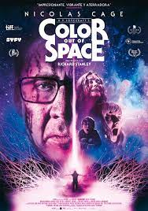

En una remota zona de la Antártida, un descubrimiento de gran relevancia científica se convierte en un problema de supervivencia. La paleontóloga Kate Lloyd (Mary Elizabeth Winstead)
llega a esa inhóspita región para colaborar con un equipo científico noruego que ha encontrado una nave extraterrestre enterrada en el hielo, en cuyo interior hay un ser alienígena congelado
pero cuyas células están vivas... Precuela de "La Cosa", película dirigida por John Carpenter y protagonizada por Kurt Russell, que se basaba en un clásico de serie B de los años 50.

Descargar
Un meteorito atraviesa millones de kilómetros e impacta en las colinas de Arkham. Al romperse, una tonalidad supranatural, nunca vista, emerge e infecta las napas de un pozo de agua.
Con el paso del tiempo, el color pasa a los árboles, a los animales y a los seres humanos, a quienes trastorna y enloquece.